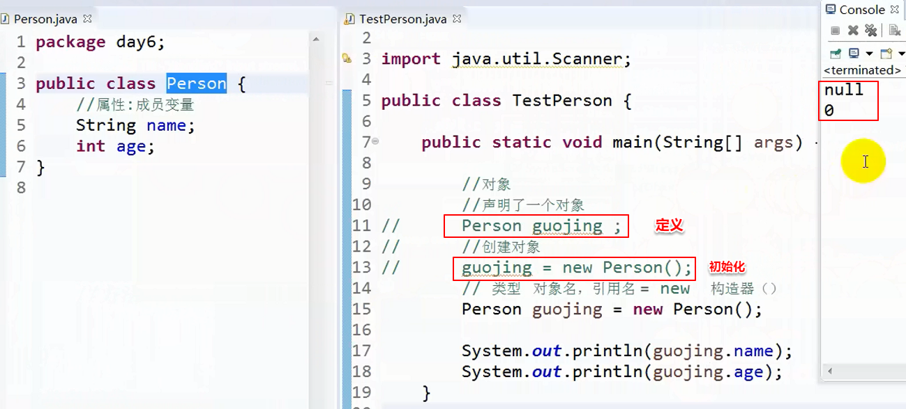

面向对象：
对象：实体，一切可以被描述的事物。
属性：特征
方法：动作
类：相似对象的集合，抽象的概念。
类和对象的区别：
1.类是抽象的。
对象是类的具体化。
2.类是个模板。
同一个模板创建出来的对象具备共同的特征和行为。
3.类是一种引用类型。
对象是具体的引用变量。
--------------------------------------------------------------------------------------------------------------------------------------------------------------------------
定义类：
访问修饰符 class 类名{
//成员
//属性
//方法
}
以上中: 访问修饰符有public、默认（default）等, 而class关键字是用来定义类的
类名规范：
帕斯卡：多个单词组成，每个单词首字母都大写。
对象
对象名.属性名
对象名.方法名
--------------------------------------------------------------------------------------------------------------------------------------------------------------------------
创建类与对象

上图中的main方法的第15行代码所对应的内存图如下 (如果是按照第11行和第13行的方式定义和初始化分开来创建对象的话,那么在内存中应该是 第11行执行时在栈中开辟空间, 暂时不在堆中开辟空间, 等第13行执行时,再在堆中开辟空间创建具体的对象)
因为并没有为属性name和age赋值, 所以name和age里的都是String和int的默认值。这也是有上一张图中输出结果的原因

也可以用直接创建匿名对象的形式访问对象,如下图
这种方式也可以使用,得到的结果也是null和0, 和上上图一样。但要注意的是第20行的对象和第21行的对象并不是同一个对象,每new一次就产生一个新的对象。需要注意的是匿名对象只能使用一次。

上图中的 20和21行代码在内存中开辟空间的情况如图,注意栈中并没有这两个对象的名字，因为它们没有定义一个变量来引用它们

如果把guojing对象置为空,再输出guojing.name会怎么样?

执行第23行时内存中会发生如下变化,注意和上上图对比

此时执行程序的话, 第24行就会报空指针异常了

--------------------------------------------------------------------------------------------------------------------------------------------------------------------------
给对象赋值

将一个对象的值赋给另一个对象
在上图代码的基础上再定义一个对象, 并把guojing对象赋给yangkang。结果yangkang.name 、yangkang.age变成了"郭靖"和22
如下图

第28行的代码在内存中开辟空间如下图:

第32行代码在内存中的变化情况如下图

--------------------------------------------------------------------------------------------------------------------------------------------------------------------------
编程题


介绍一种比int类型、long类型都要大的类型--BigInteger, 它能表示的整数的范围比long还要大。这个类型在math库里

--------------------------------------------------------------------------------------------------------------------------------------------------------------------------
方法：
修饰符 返回值类型 方法名([参数]) {
方法体;
}
带返回值：
1.声明的返回值类型与实际返回的类型要一致。
2.只能返回一个值。
带参数的方法：
传参时实参与形参的个数、类型、顺序必须一致。
方法调用：
同一个类中:
1)自定义方法可以直接调用：
this. （其实 this. 可省略，在同一个类中调用方法直接写方法名调用即可，因为不可能会有"方法名+参数"出现重复的可能，也没有局部方法和全局方法之分。但加上 this. 是完整的写法，不加当然也要认得出来）
2)主方法中调用非静态方法，需要先创建对象(new); （意思是 在当前类的主方法里调用当前类的其他非静态方法，也需要创建对象。除非被调用的方法是static静态方法，则可以不创建对象而被主方法调用）
不同类中：创建对象new调用(如果是静态的就直接"类名.方法"调用)。
-------------------------------------------------------------------------------------------------------------------------------------------------------------------------
方法的参数：
1.值类型(基本数据类型)
按值传递，传递完后本身不会改变；
2.引用类型。
1）两个引用指向的是同一个对象(也就是同一个类的同一个对象)或数组。
传递完后 数组的值或者对象的成员变量 随着方法而改变
2）两个引用指向了不同的对象(也就是同一个类的不同对象)或数组。
数组的值不受影响,但对于类的对象来说,不是同一个对象, 非静态成员变量不会受影响, 静态成员变量是共用的, 如果改变了, 会受影响。
值类型参数应用举例,输出结果为11

程序执行到末尾在内存中的存储情况如图, 其中f()函数是进栈然后再出栈的

引用类型参数应用举例
1）两个引用指向了同一个对象
重点看函数ff(),与f()函数无关, 最后输出结果为22
一个文件中如果有几个类并列存在时,那么只能有一个类是public的(并且public的类要与.java的文件名相同),其他的类要么是默认的,要么是private的

程序执行到末尾时内存中的情况如图,虽然ff()在进栈之后也是先出栈的,但它对p.value的影响还是在的,因为ff()函数和main函数的p都是指向同一个地址的

2）两个引用指向了不同的对象
重点看函数fff(),与ff()和f()函数无关, 最后输出结果为11


程序执行到末尾时内存中的情况如图

-------------------------------------------------------------------------------------------------------------------------------------------------------------------------
一个文件中定义多个类：(不管是其它类都作为其中一个类的内部类, 还是所有这些类并列存在)
注意：1.只能有一个类是public的；
2.带主方法的类是public的；
3.public修饰的类的名字与文件名必须一致。
--------------------------------------------------------------------------------------------------------------------------------------------------------------------------
方法的好处：
1.封装；
2.便于维护；代码重用。
--------------------------------------------------------------------------------------------------------------------------------------------------------------------------
成员变量和局部变量的区别：
成员变量：在类中定义的变量。
局部变量：在方法中定义的变量。
1.作用域。
成员变量： 在整个类中有效。
局部变量: 在声明局部变量的开始{ 到对应的作用域结束 }
2.初始化。
成员变量： 在给类创建对象后，系统会自动初始化(会赋默认初始值)；
局部变量： 需要我们自己初始化(不会自动赋默认初始值)。
3.优先级：
成员变量 和 局部变量同名时，
在局部变量作用域内优先使用局部变量。
--------------------------------------------------------------------------------------------------------------------------------------------------------------------------
this:
指向当前类，本类对象。
作用：
调用当前类的成员。
成员变量和局部变量同名区分。
--------------------------------------------------------------------------------------------------------------------------------------------------------------------------
可变参数(变长参数)：
语法 ...
底层： 数组 （可变参数的本质是数组）
传递可变参数就相当于传递以实参为元素列表的一个数组。传几个实参,就相当于建立了包含几个元素的数组
如下,每次给t.f()传参的效果注释在了每条语句的后面

数组参数和可变参数区别：
1.可变参数传参方式灵活,有：不传参、传多个值、传数组；
数组参数：只能传递数组类型；
2方法的参数中：一个方法的可变参数只能有一个；
一个方法的数组参数可以有多个；
3.一个方法如果有多个参数, 则可变参数一定放在最后面；
数组参数可以在任何位置。
--------------------------------------------------------------------------------------------------------------------------------------------------------------------------
主方法的传参方式(从下面主方法的传参来说可以看出主方法的参数是个可变参数(虽然主方法的参数是String[] args,是个数组参数),或者可能主方法有多个传参方式的重载方法)
(1)可以使用命令行去给main函数传参


我的测试目录如下

(2)也可以通过设置程序运行的参数run configurations来给main函数传参


--------------------------------------------------------------------------------------------------------------------------------------------------------------------------
递归：
允许调用自身的一种编程方式。
特点：
1.调用自身；
2.设置出口，在条件满足时结束方法。
比较两种输出方式的不同
(1)先输出后调用

输出结果为

(2)先调用后输出

输出结果

注意事项:

--------------------------------------------------------------------------------------------------------------------------------------------------------------------------
数组应用之图书管理系统2.0
图书管理系统1.0是用面向过程的方法写的
图书管理系统2.0则是用面向对象的方法写的
下面这个链接是我写的

下面这个链接是视频里给的写法
主要区别就在于删除书籍的方法上略有不同
——————————————————————手写与上传资料分割线——————————————————————